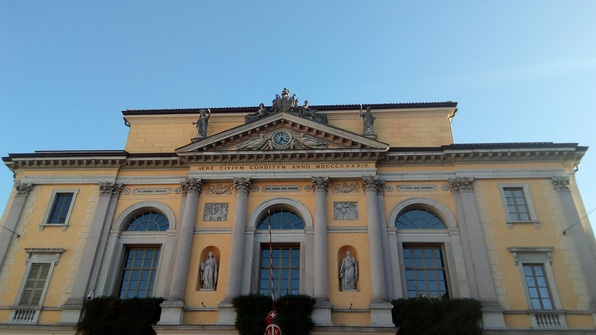
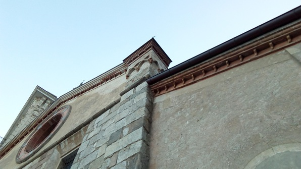
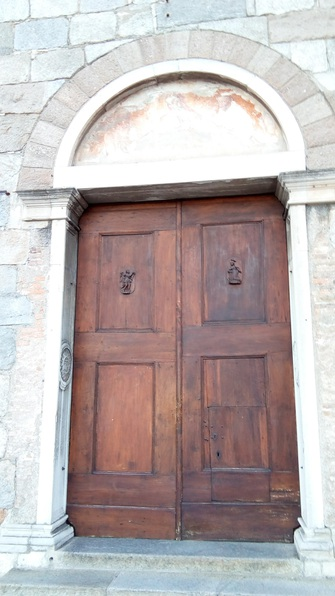
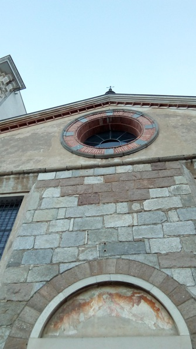

I get up late this morning, take a run under grumpy grey clouds, and realize on the run that train tickets to Lugano, a beautiful and sunny town very near to Italy in the Italian-speaking part of Switzerland, are only about CHF 20.
Awaken a drowsy Betty, who, after an excitement dump and a pitch for doing homework on the train, decides to join me! This is the first time I’ve organized anything in Switzerland–I’d sworn off the stuff when I left the States, so I’m feeling a bit of trepidation. We pack some sandwiches using our German grocery gains and then book it to the HB.
The 2 hr train ride is absolutely beautiful and I get some ML homework done.
The weather is indeed lovely in Lugano :D Betty and I go to an amazing park, where we wade and I do handstands in the shallow water.





We try to take the funicular up to one of the “mountain” hills to get a stunning view but, after catching a bus with legendary timing, I find that my planning skills are rusty and we’re too late. So we walk back to the park, get some delicious gelato, and have some deep conversation while chucking rocks at another rock sticking out of the water (the rock chucking permeates the entire conversation spanning like 2hrs :D)
Then we go back up the hill to the train station, hop back on the train with our Gleis 7, talk about academic life and research until we’re both falling asleep, get back to Zurich and crash.